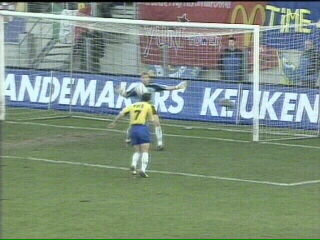
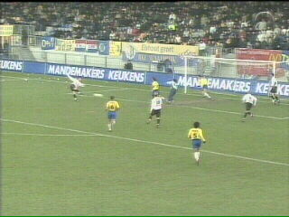

|
RKC - Roda JC (2-1) 8 december 2002 |
Doelman Van Dijk krijgt de rode kaart na deze
handsbal buiten de zestien (28').

Roda kan de meer-man-situatie niet uitbuiten en
ziet Petrovic in de 32e min. zelfs 1-0 inkoppen.
Van Dijk die Vicelich kwam vervangen, krijgt al
na enkele minuten geel.
Jochen Janssen kopt 2-0 binnen (57').

Roda wordt wakker. In de 72e min. schiet Diego
Jongen 2-1 binnen na voorbereidend werk van
Cristiano.
Jongen was ingevallen voor Brouwers.
Handsbal van Greene. De vrije trap die Roda
daarop kreeg werd door Luijpers overgeschoten.
Anastasiou verprutste enkele goede kansen.
Van Dijk heeft haast en wil de bal van Petrovic
om in te kunnen gooien. Arbiter Schenkel geeft
weer geel en dus kan Gregoor inrukken.
Dit doelpunt van Hoogendorp in de slotminuut
werd niet toegekend wegens buitenspel.
Roda verliest voor de zesde opeenvolgende
keer in Waalwijk! Bovendien raakt het na deze
nederlaag de 4e plaats kwijt aan RKC.
© Koempels
Pleasure Dome